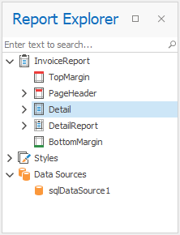
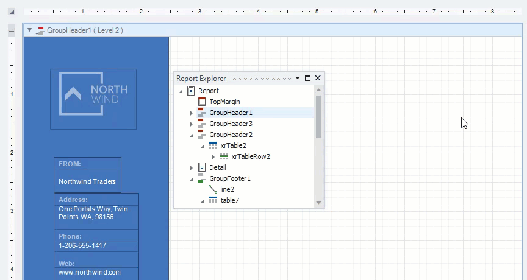
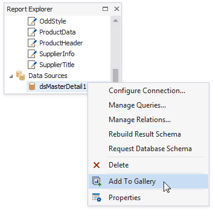

Report Explorer
The Report Explorer shows a report structure in a tree-like form and provides access to components assigned to a report (such as its data sources).

Search fields
Enter a search string in the search box. The Report Explorer filters report elements, styles, and data sources to match the entered string.

Report Bands and Controls
Bands and controls are listed in a hierarchical tree-like structure.
Select an element and invoke the context menu to access the available actions.

Select an element and navigate to the Property Grid to edit the element's options.

Data-bound controls are marked with a yellow database icon.

Right-click an element in the Report Explorer and select Navigate To Control from the context menu to move the design surface's visible area to this element.

Drag elements to change their location.

Check the following topics for more information on how to manipulate report elements:
Report Styles
Drop a style onto a report element. This applies the selected style to the element.

You can select all report elements with a specific style.

Report Data Sources
The Data Sources node lists all data sources configured for the report. Right-click a data source to customize its settings or add it to the Report Gallery.

You can convert a Data Set data source to an SQL data source. Right-click the Data Set and select Convert to SqlDataSource from the context menu. Click Yes in the invoked dialog to confirm the selected action.